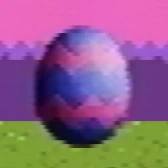

Egg

The Easter egg as shown in a channel icon
The eggs are various objects in Petscop that appear as decorated Easter eggs.
An egg was first seen as the channel’s icon from April 4, 2019 to April 21, 2019. The same egg was revealed in Petscop 19 in the "mike2" recording. Two more eggs were seen in Petscop 23.
Eggs
Easter Egg
The egg seen in Petscop 19 during the "mike2" recording is a collectible interactive object that is in an older gen of Even Care. It is decorated blue with pink zigzag lines.
When the player moves over it, the egg zooms towards the camera, and the following text appears:
What? One of the eggs... was in Daniel’s game??
What an unfair trick!
Have you found every egg in the office?
This egg was shown as the channel’s icon beginning in early April until shortly after the April 21st uploads.
Between April 2, 2019 and September 1, 2019, the channel's About page mentioned an Easter egg hunt:
Some select "Petscop" recordings.
In a way, recordings have the power to raise the dead. They're kind of scary.
We finished our long Easter egg hunt.
")
{kind=link}
{kind=link}
{kind=link}
Tiara's Egg
An egg is found inside the locker next to a note addressed to "Tiara Leskowitz." It is decorated pink with purple lines.
{kind=link}
Care's Egg
An egg comes out of the machine in Petscop 23 after "Pall" places Care B inside and plays the Needles Piano, implied to be what Care B had become. It is decorated yellow with red lines.
The egg can be picked up from the machine and caught like a pet, sharing a cry sound similar to the other Care pets. It has an entry in the Pets menu, taking up the previously blank spot, with the following description:
? You should start thinking about that.
The description pulls from part of the end of Amber's description. This, along with the long time to print the description, suggests it to be an error.
This egg can be dropped into the locker with "Tiara's Egg" by standing in front of the open locker, opening the pets menu, and selecting the egg.
{kind=link}
{kind=link}
{kind=link}
Theories
The Easter egg appears to have been part of a real-life egg hunt event occurring within an office between friends or family, but hidden inside "Daniel's game", possibly referring to Petscop itself. It may also be intended as a simple collision test (as it reacts to colliding with the guardian), a text box test (as it shows a primitive textbox system when collected), or both. It may be related to some kind of Easter egg hunt that happened during Mike's birthday and was discovered later after Mike played the game. This is supported by the text "What an unfair trick!"
"Tiara's Egg" and "Care's Egg" may be representative of the process of rebirthing in Petscop, possibly more specifically when the process fails or is otherwise incomplete. Belle was intended to rebirth into Tiara, but failed. Marvin's reaction to "Pall"'s session with Care and the machine shown in Petscop 23 suggests he may have been working against the process, ending in a failed result.
The channel's description when the video was uploaded referred to finishing a long Easter egg hunt, which may refer to discovering the recording showing where the Easter egg and possibly the other eggs, were "hidden."